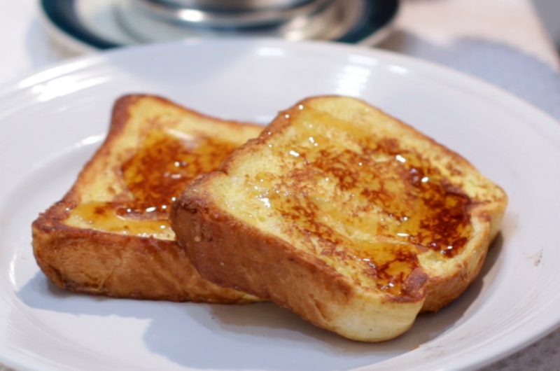

Frech Toast to make anyone a fan
Breakfast has many staples that classify as a must eat dish. And one of those just happen to be French Toast.
The fluffly bread topped perfectly with hints of vanilla and cinnamon. It is easy to see why it is such a favorite.
Below we are going to walk through the steps, so that you can make your own and shine at the next Breakfast

Prep Time: 10 minutes Cook Time: 5 minutes Total Time: 15 minutes
Ingredients
- 1 egg
- 2 pieces of thick sliced bread (whatever your preference
- 2-4 tablespoon of milk
- 1/2 teaspoon Vanilla extract
- 1 tablespoon butter
- 1 pinch of cinnamon
Directions
- In a bowl mix together the egg, milk, vanilla extract, and cinnamon.
Pour the batter into a shallow dish. This will make it easier to soak the bread
- Soak the slices of bread on both sides and sop up that batter. Use clean
hands, tongs or gloves
- Heat up skillet or griddle on medium heat and coat with butter. Place the soaked
bread onto the skillet and cook each side for a minute or two until golden brown.
- Once golden brown, remove from the skillet and serve with the garnish of your choosing.
we recommend pure maple syrup and fruit!